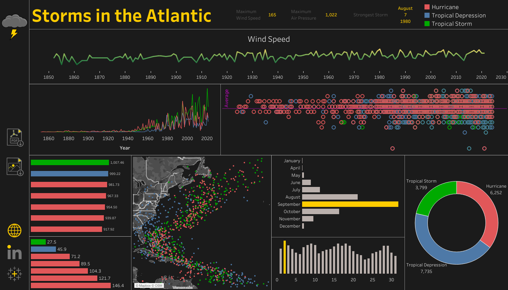

Data Exploration
Once we have completed the initial cleaning of the data, we can explore the data and generate some interesting elements to highlight later. During this process we may uncover additional areas where the data needs to be further cleaned as well as other issues.
- May require additional cleaning steps.
- Create a Staging Copy
- Explore data to find interesting data points.
- Look for patterns in the data.
- Not all data will be relevant.
- Look at the data using a variety of sorting/ordering methods.
1. Take a Look at the Data
Before we can create a dashboard or present the data in any meaningful way, we need to look at what data is present in our tables and see what potential insights can be found. In the screenshot we can see that the date, time, location, category, and wind speed are some interesting data points included with this set.
Looking at this data I can already see we can develop multiple insights.
- Year, month, day, and hour indicates we can showcase data across a period of time.
- Longitude and Latitude values indicate we can create a map visual showing the locations of the storms.
- Wind speed, pressure, and category information may also provide useful insights which may be cross referenced with other data points.
2. Write some scripts to pull interesting data points.
Now that we have reviewed the data, we can begin to write some SQL scripts to pull out interesting data points. This shows the areas to focus on that will give us the most interesting and relevant data. With the following script, we can pull the following insights indicated in the image below.
select category, max(wind), max(pressure)
from storms.storms
group by category
;
Here is some additional code pulling the number of recorded storms for each year.
select `year`, count(year)
from storms.storms
group by `year`
order by count(year) desc
;
3. Create the final dashboard.
Here the dashboard I created using this data set.
{kind=link}